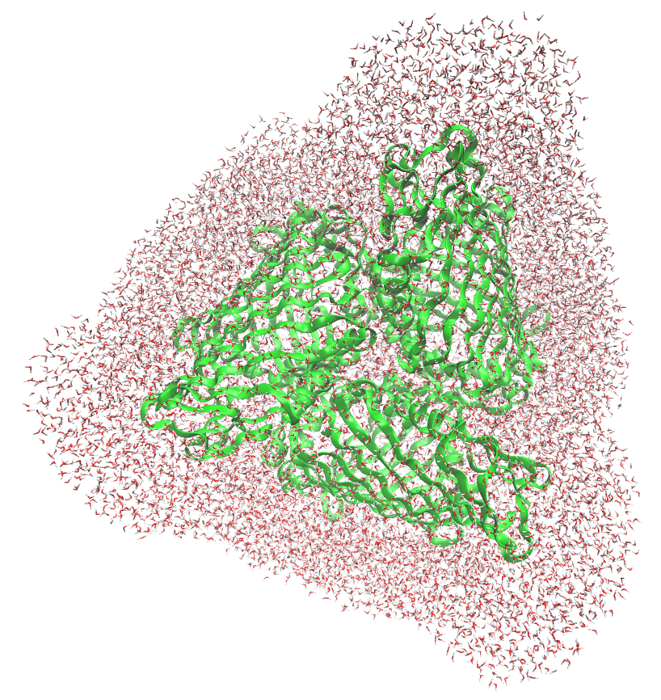
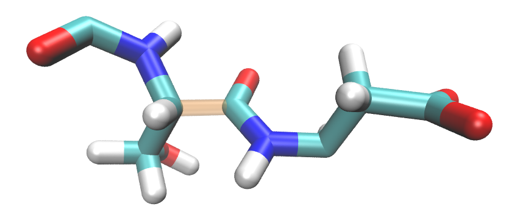

QM/EFP calculations using BioEFP and FlexEFP
Introduction
QM/EFP methods are powerful tools for describing photo- and redox-chemistry in condensed phases, see e.g., Biological chromophores. However, setting up QM/EFP calculations for complex systems is not trivial and time-consuming. This tutorial presents a computational workflow that helps interested users to setup QM/EFP calculations of photoactive proteins in the format suitable for calculations in Q-Chem. It is assumed that the initial structures for QM/EFP calculations are obtained from a Gromacs MD trajectory. GAMESS is used for computing EFP parameters.
The workflow was tested on several photosynthetic pigment-protein complexes (FMO, PS 1, WSCP). While the workflow is reasonably general and can be adapted to other biological and materials systems, the QM/EFP calculations are nowhere “black-box” and the user will need to make some decisions based on the system specifics and the properties of interest.
Preliminaries
Gromacs installation
GAMESS installation
Q-Chem installation
Python 3
To start with, you will need the following Gromacs files:
structure file (.g96)
topology file (.top)
binary file from molecular dynamics (.tpr)
If you wish to use the FlexEFP scheme as described in Flexible EFP paper, you also need a library of precomputed EFP potentials. Parameter database from Flexible EFP paper can be found here.
Workflow overview
{kind=link}
The workflow leads the user through the following steps:
FMO protein
The Fenna-Matthews-Olson (FMO) protein is used as an example system. Preparation of the QM anf EFP regions follows the work by Kim et al.
FMO is a trimeric protein with eight bacteriochloropyll a (BChl) pigments in each monomer. FMO completes energy transfer via excitonic couplings across these eight BChls.


In the present example, water molecules more than 15 angstroms from the protein’s surface have been removed.
{kind=link}
Molecular dynamics and constrained QM/MM geometry optimizations have been already performed on the system. The constrained QM/MM geometry optimizations have been shown to be essential for accurate predictions of optical spectra and redox properties.[REFS] However, this step is not considered in this tutorial and it is up to the user to take care of it if needed.
Note
The provided .g96 file contains QSL and LA residues, corresponding to so called “quantum” waters, i.e., water molecules that could be included in the QM regions for QM/MM optimizations and link atoms for defining QM-MM boundaries, that are ‘left-overs’ of the QM/MM optimizations. These residues are of course not mandatory for any of the scripts below.
Defining QM and EFP regions
In the present example, the QM/EFP calculation will be set up for the third BChl (residue number 361) in the active (QM) region.
EFP region
While it is possible to include all non-QM atoms in the EFP region, this approach might be expansive for larger proteins, both at the step of computing EFP parameters, and performing QM/EFP calculation. Thus, a practical approach is to define the EFP region that will include all residues within a particular distance from the QM region. Here, we will include every amino acid, (non-QM) BChls, and water molecules containing an atom within 15 Angstroms of the BChl chlorin ring.
Note
One can extract a single snapshot from GROMACS MD trajectory in .g96 format using
gmx traj -f md_50.trr -s md_50.tpr -o snapshot_timestep.g96 [JACK]
Note
Note that extracting larger systems can occasionally cause columns to be misaligned due to the residue ID number passing from 9999 to 10000. This misalignment can make the structure appear strangely in VMD or other visualizers (i.e., you will see “sheets” of waters with coordinates read incorrectly). Though it shouldn’t matter, you can fix the problem by realigning the columns. Column reformatting script is an example of a script that can fix this problem.
In order to figure out which amino acids, cofactors, and water molecules constitute the EFP region,
we make use of the gmx select command, but this will take a bit of footwork. First, we create an index file
that defines the BChl headring group that will contain atoms of chlorin ring.
Note
The BChl chlorin ring (headring) is defined by the following atom names:
MG CHA CHB HB CHC HC CHD HD NA C1A C2A H2A C3A H3A
C4A CMA HMA1 HMA2 HMA3 NB C1B C2B C3B C4B CMB HMB1 HMB2 HMB3 CAB OBB CBB HBB1 HBB2 HBB3 NC C1C
C2C H2C C3C H3C C4C CMC HMC1 HMC2 HMC3 CAC HAC1 HAC2 CBC HBC1 HBC2 HBC3 ND C1D C2D C3D C4D CMD
HMD1 HMD2 HMD3 CAD OBD CBD HBD CGD O1D O2D CED HED1 HED2 HED3
The code below will generate this index file with the default
name index.ndx; index.ndx contains all standard GROMACS index groups (system, protein, etc),
with a new added group, ‘headring’.
1gmx make_ndx -f formed_bchl361-79002.g96 <<EOF
2r 361 & a MG CHA CHB HB CHC HC CHD HD NA C1A C2A H2A C3A H3A C4A CMA HMA1 HMA2 HMA3 NB C1B C2B C3B C4B CMB HMB1 HMB2 HMB3 CAB OBB CBB HBB1 HBB2 HBB3 NC C1C C2C H2C C3C H3C C4C CMC HMC1 HMC2 HMC3 CAC HAC1 HAC2 CBC HBC1 HBC2 HBC3 ND C1D C2D C3D C4D CMD HMD1 HMD2 HMD3 CAD OBD CBD HBD CGD O1D O2D CED HED1 HED2 HED3
3name 26 Headring
4q
5EOF
Warning
Make sure to adjust the code above to your system’s active region!
Here is a visualization of the atoms contained in the newly created index group:

We want the EFP region to be composed of all residues that contain at least one atom within 15 Angstroms of the headring atoms. The following command will do the job:
gmx select -s md_80.tpr -n index.ndx -f bchl361-79002.g96 -select
'same residue as within 1.5 of group "Headring"' -on shell_index.ndx [JACK]
This command looks for any atom within the 1.5 cutoff (GROMACS units are nm), then accepts every atom belonging to the same residue as the found atom, and adds these to the selection. The output of the command is named shell_index.ndx, which, as the extension implies, is another index file. This file has exactly one index group that defines the EFP region.
Now, gmx editconf -f formed_bchl361-79002.g96 -n shell_index.ndx -o shell_bchl361-79002.g96
creates a new structure file of the EFP region only.
Note that you do not need to specify the group output because the shell_index.ndx file only contains one group.
The headring surrounded by the EFP region looks like this:

Note
The QM region will include the entire BChl, but the EFP region is defined by a distance to the chlorin ring only.
QM region
Warning
Defining the QM region is system-specific. The user needs to prepare a text file containing all atoms of the QM region as well as pairs of atoms defining the covalent boundaries between the QM and EFP regions!
Take a look at the example prepared for the 3rd BChl in FMO qm_defined.inp).
This file can be constructed by
copying the corresponding lines from the .g96 file. The “QM_atoms” section of the file should contain all QM atoms
(not including capping hydrogens for covalent QM-EFP boundaries).
1QM_atoms
2 290 HID CB 4423 7.642829418 5.747635365 6.631662846
3 290 HID HB1 4424 7.690435886 5.791911602 6.719151974
4 290 HID HB2 4425 7.702376842 5.734309196 6.541343212
5 290 HID CG 4426 7.616473675 5.602392197 6.675217152
6 290 HID ND1 4427 7.564018726 5.549627781 6.790104389
7 290 HID HD1 4428 7.526696682 5.608877659 6.862887859
8 290 HID CE1 4429 7.573244572 5.417556286 6.787623882
9 290 HID HE1 4430 7.525365353 5.356580257 6.862813473
10 290 HID NE2 4431 7.630198002 5.375784874 6.671539783
11 290 HID CD2 4432 7.659914494 5.495519638 6.606870174
12 290 HID HD2 4433 7.729931355 5.498696804 6.524702549
13 361 BCL MG 5807 7.683570385 5.063692570 6.584101200
14 361 BCL CHA 5808 7.531836033 5.139747143 6.278742790
15 361 BCL CHB 5809 7.987795353 5.096710682 6.448209286
16 361 BCL HB 5810 8.083442688 5.096199036 6.395521641
17 361 BCL CHC 5811 7.814235210 5.021772861 6.903957844
18 361 BCL HC 5812 7.851527691 5.018221855 7.006530285
19 361 BCL CHD 5813 7.359744549 5.040185928 6.723926067
20 361 BCL HD 5814 7.258452892 5.027849674 6.762816906
21...
The “QM-MM” boundary section is optional and should
contain pairs of atoms for each covalent boundary, with the QM atom listed first.
The example qm_defined.inp contains only one QM-MM boundary, but a
second boundary could be included like this:
1QM-MM
2boundary 1
3 290 HID CB 4423 7.642829418 5.747635365 6.631662846
4 290 HID CA 4421 7.514162540 5.827141285 6.594927311
5boundary 2
6 290 HID CB 4423 7.642829418 5.747635365 6.631662846
7 290 HID HB1 4424 7.690435886 5.791911602 6.719151974
[JACK: do coordinates need to match?]
Example: QM region for the third BChl in FMO
By trial and error we found that including the Mg-coordinating amino acid residue in the QM region in QM/EFP calculations helps SCF convergence and makes excitation energies more reliable. Thus, the QM region will include all atoms of the BChl (residue BCL 361) as well as atoms from the nearby histidine that coordinates the BChl Mg atom shown below.

This shows the entire residue 361 (BCL) and 290 (HIS), however, we only want to include the side chain of this histidine. In other words, the residue atoms including \(C_{\beta}\) should be included in the QM region, and the backbone atoms (starting with \(C_{\alpha}\)) should remain in the EFP region. That division looks like this:
{kind=link}
Thus, we create a covalent QM-EFP boundary between \(C_{\beta}\) and \(C_{\alpha}\), reflected in the example above. The scripts will automatically cap the QM region with hydrogen atoms positioned between the boundary atoms, so the QM region in the QM/EFP calculations will look like this:

We will discuss preparation of the EFP fragment for the boundary histidine later on.
Fragmentation of the EFP region
Now we need to prepare EFP fragments for our system. In EFP region we have already created .g96 file containing atoms belonging to the EFP region. Here we will split polypeptide chains and other large residues into EFP fragments.
Splitting protein into EFP fragments
Because protein is a continuous chain, covalent bonds between neighboring amino acids have to be broken. Chemically, we would like to break the \(C-C_{\alpha}\) bond (between alpha carbon and carbonyl carbon), however, standard PDB convention divides residues by the C-N bond (alpha carbon-nitrogen).
PDB residues are divided like this:

EFP fragments need to be divided like this:
{kind=link}
This, EFP amino acid fragments will not completely ‘agree’ with the PDB amino acid numbering. Below is a snippet from the structure file (.g96) with the EFP fragment 7 highlighted. Note that atoms ‘C’ and ‘O’ of the PDB residue 6 (SER) will be included in the EFP fragment 7 (ASP).
1 6 SER N 75 8.321870804 4.485276699 7.284091473
2 6 SER H 76 8.350618362 4.454034328 7.375734806
3 6 SER CA 77 8.417644501 4.567386150 7.205451488
4 6 SER HA 78 8.419803619 4.528203011 7.103761196
5 6 SER CB 79 8.368366241 4.711947441 7.193405628
6 6 SER HB1 80 8.269208908 4.708506584 7.148269176
7 6 SER HB2 81 8.421850204 4.761358261 7.112295628
8 6 SER OG 82 8.367326736 4.794726372 7.312560558
9 6 SER HG 83 8.454633713 4.832594395 7.325180531
10 6 SER C 84 8.560445786 4.558277130 7.268922329
11 6 SER O 85 8.572677612 4.533203125 7.387583256
12 7 ASP N 86 8.663642883 4.582690239 7.183378696
13 7 ASP H 87 8.638984680 4.619784832 7.092730999
14 7 ASP CA 88 8.804636002 4.563919544 7.209733486
15 7 ASP HA 89 8.821094513 4.593161583 7.313438892
16 7 ASP CB 90 8.842021942 4.416758537 7.207666874
17 7 ASP HB1 91 8.802436829 4.372995377 7.116020679
18 7 ASP HB2 92 8.804891586 4.358578205 7.292031765
19 7 ASP CG 93 8.994537354 4.388171196 7.197051525
20 7 ASP OD1 94 9.062387466 4.408482552 7.298908710
21 7 ASP OD2 95 9.046514511 4.348608971 7.086165905
22 7 ASP C 96 8.905342102 4.655499458 7.132633686
23 7 ASP O 97 8.919197083 4.634913445 7.010179996
A daunting task of splitting the protein into EFP fragments is accomplished by script make_AAs.py.
A sample execution is:
python make_AAs.py shell_bchl361-79002.g96 bchl361-79002.g96 qm_defined.txt topol.top
The input parameters are: * .g96 file containing atoms of EFP region (see EFP region) * .g96 file containing a full system (your initial structure from MD) * user-prepared file with definition of QM region and QM-EFP boundaries * *.top topology file for your system
Output: * GAMESS MAKEFP input files for all amino acids and other residues
Note
GAMESS MAKEFP input file parameters might be adjusted in make_AAs.py
The script splits the EFP region of the protein into EFP fragments and creates a GAMESS MAKEFP input file for each fragment. The script will create EFP fragments and corresponding input files for non-amino acid residues.
The filenames use information from *.g96 file; for example, v_22_301.inp is a valine residue (v), residue number 22, and the first atom of this fragment has an atom ID of 301. [JACK: based on which g96?] Histidine residues are denoted hd_, he, or hp_ depending on protonation states. Capping hydrogens are added automatically to amino acid fragments, with atom names H000. The capping hydrogens will be automatically removed from the amino acid EFP fragments once the EFP parameters are computed.
Non-standard amino acids are named with full residue names given in the g96 structure file (i.e., bcl_360_5667.inp for the BCL with residue number 360). Non amino acids fragments are created with no capping hydrogens by default.
QM-EFP boundary fragments
For a fragment with a QM-EFP covalent boundary (e.g., HIS 290 from Example: QM region for the third BChl in FMO),
the script will add two comment lines to the end of the input file.
The !comment atoms to be erased line will contain atom names of the QM atoms to be removed from the
parameter file. !polarization points to remove will additionally list atoms around which polarization points
will be removed. These atoms are found as the covalently bound to the “to-be-deleted atoms” by analysis of
the topology file.
Here is an example for HIS 290 (hd_290_4417.inp):
1 $contrl units=angs local=boys runtyp=makefp
2 mult=1 icharg=0 coord=cart icut=11 $end
3 $system timlim=99999 mwords=200 $end
4 $scf soscf=.f. dirscf=.t. diis=.t. CONV=1.0d-06 $end
5 $basis gbasis=n31 ngauss=6 ndfunc=1 $end
6 $DAMP IFTTYP(1)=2,0 IFTFIX(1)=1,1 thrsh=500.0 $end
7 $MAKEFP POL=.t. DISP=.f. CHTR=.f. EXREP=.f. $end
8 $data
9 hd_290_4417
10 C1
11 C 6.0 74.77875233 60.31275272 64.73697186
12 O 8.0 73.73520374 59.84195232 64.28843975
13 N 7.0 75.60393810 59.59977150 65.51030636
14 H 1.0 76.44154072 60.08422375 65.79982281
15 CA 6.0 75.14162540 58.27141285 65.94927311
16 HA 1.0 74.66980457 57.75234222 65.11497974
17 CB 6.0 76.42829418 57.47635365 66.31662846
18 HB1 1.0 76.90435886 57.91911602 67.19151974
19 HB2 1.0 77.02376842 57.34309196 65.41343212
20 CG 6.0 76.16473675 56.02392197 66.75217152
21 ND1 7.0 75.64018726 55.49627781 67.90104389
22 HD1 1.0 75.26696682 56.08877659 68.62887859
23 CE1 6.0 75.73244572 54.17556286 67.87623882
24 HE1 1.0 75.25365353 53.56580257 68.62813473
25 NE2 7.0 76.30198002 53.75784874 66.71539783
26 CD2 6.0 76.59914494 54.95519638 66.06870174
27 HD2 1.0 77.29931355 54.98696804 65.24702549
28 H000 1.0 74.94270842 61.35706426 64.52140121
29 H000 1.0 74.42844016 58.29696791 66.75837919
30 $end
31!comment atoms to be erased: CA CB HB1 HB2 CG ND1 HD1 CE1 HE1 NE2 CD2 HD2
32!polarization points to remove: N HA
Note that while CA (alpha-carbon) is not a part of the QM region, it is a QM-EFP boundary atoms and will be also removed from the parameter file in a later step. The commented lines will be used later to finalize the fragment parameter files. Here we follow a QM-EFP boundary scheme developed by Yongbin Kim FMO paper that ensured stability of QM/EFP calculations in the FMO protein.

If a residue contains only QM atoms, such as BCL 361 in our example, no input file will be created.
Non-amino acids and cofactors
make_AAs.py is robust in preparing EFP fragments for amino acid sequences and non-covalently linked molecules (e.g.,
water molecules, ions, simple cofactors). However, large cofactors (exceeding 100 atoms) and non-protein polymers
need to be further split into EFP fragments. Making a general script that would solve this task is work
in progress. Here we provide a script that splits (B)Chl a into chlorin head and tail
fragments.
Note
make_AAs.py creates fragments for all non-amino acid residues including (B)Chls. However,
it creates one fragment for the entire residue. If you plan to create sub-fragments as explained below,
you should delete the full molecule input files made with make_AA.py.
Below is the division of the head and tail groups in BChl:

The script make_bchls.py creates two fragment input files for each Bchl molecule according to that division. Capping
hydrogens are added where the two are normally covalently bound, much like the case for the amino acid backbone bonds. The
script can be executed by:
python make_bchls.py shell_bchl361-79002.g96 361
[JACK: wrong arguments here?]
This script is “hard-coded” for the FMO BChls. You can try to edit it for your purposes. Variable “RESNAME” is the name of the residue to be fragmented. The list “Headrings” includes the atom names for every atom to be added to the head fragment. Atoms that are not in this list will be added to the tail fragment. Variables “headside” and “tailside” are the names of the two atoms that are normally covalently bound, but will be capped for the fragmentation. Variable “site” is optional, it lists the residue ID of a QM residue that doesn’t need to be fragmented because it is in the QM region.
EFP parameter generation
make_AAs.py and make_bchls.py from the previous step created a collection of GAMESS MAKEFP input files.
Now you have two options:
compute all needed EFP parameters by running the MAKEFP inputs in GAMESS
use FlexEFP procedure to obtain parameters by rotation of the already computed parameters stored in the database
If you system is small and/or you do not want to use FlexEFP scheme, submit GAMESS calculations
for all generated inputs, make sure to collect all produced .efp files and proceed
to the next section The Classical Region Fragment.
Otherwise, fragment_RMSD.py script will check geometry of a fragment against
fragments available in the database of pre-computed parameters (for amino acids, the script is smart to search only
among the same-amino acid fragments).
If the RMSD between the two structures is sufficiently small, then the parameters are
considered good enough and will be adjusted (rotated and translated to exactly match geometry
of your fragment), such that you don’t have to calculate them in GAMESS!
Note
A path to the EFP parameter database is hard-coded in fragment_RMSD.py script.
Adjust it accordingly!
Note
The RMSD threshold value is hardcoded in fragment_RMSD.py to 0.2 Angstroms. Change
it if desired.
The script fragment_RMSD.py can be run by the following example:
fragment_RMSD.py a_4_45.inp
This reads the given GAMESS MAKEFP input file (a_4_45.inp) and computes the RMSD with each .efp file it can find in the ala/
directory of the database (“a” in the input name is a one-letter name of alanine).
[JACK: is t=it relevant? “then name the final folder(s) by amino acid (ie, ala/, cys/, thr/, etc)”] [JACK: need to move step4.Flexible_V5.py to the directory with these scripts]
If no suitable match is found in the database, the script will print a message of “No match, run GAMESS for: <filename>”, and an .efp file will not be created. If no database folder is found, or if the input is not a standard, non-terminal amino acid, the python script will return an error. For all such fragments, you will need to run GAMESS calculations. Fortunately, most of them will not take more than a few minutes.
[JACK: need to make this part easier to use. e.g., create a list of all non-computed fragments or copy those inputs into separate directory]
[JACK: If you need to repeat this step, delete this text file to avoid confusion. - which text file?]
A simple way to use this script for all fragments in the EFP region is to make a bash script to iterate through every *.inp
file in the current directory.
The Classical Region Fragment
Atoms not included in either QM or EFP regions, i.e., atoms far from the QM subsystem, will be included in the QM/EFP calculation as classical atoms possessing only partial charges. We will combine all these classical atoms into a single EFP “superfragment” that will contain only coordinates, monopoles and screen sections.
make_mm.py reads the EFP region structure, the full
structure, and the topology to create this “superfragment” efp file.
python make_MM.py shell_bchl361-79002.g96 bchl361-79002.g96 topol.top
The topology file is necessary for atomic charges, and both structure files are read so that only MM atoms will be included (both QM and EFP atoms are omitted).
EFP parameter trimming
Before using the QM/EFP calculations, EFP fragment parameters need to be trimmed. That is,
capping hydrogens that were added to amino acid fragments to make them closed-shell molecules for parameter calculations need to be removed. All parameters associated with capping hydrogens need to be removed as well.
fragments with QM-EFP covalent boundaries need to be cleaned from all QM atoms and boundary atoms. Additionally, some of polarization points at the boundary need to be eliminated to avoid overpolarization of the QM region.
[JACK: what about BChls? which script takes care of those?]
[JACK: cut_qm.py name is misleading]
cut_qm.py script trims EFP parameters following the (optional) information provided in the MAKEFP input files.
Note
cut_qm.py will always delete hydrogens named H000 (capping hydrogens added to cap dangling bonds when
fragments were cut from a larger molecule) and the associated parameters.
QM-EFP boundary fragments will be treated based on the information provided in comment sections in the input files, see QM-EFP boundary fragments
A sample execution is:
cut_qm.py hd_290_4417.inp hd_290_4417.efp
[JACK: what is this paragraph? Does not match with the example: “ala_33_473.inp is an alanine fragment with QM atoms commented to be deleted and EFP atoms to have polarization points removed. a0001.efp is a parameter file that is either the output of the input file, or translated information from a database parameter file to align with the input’s coordinates.”]
cu_qm.py must be executed on every amino acid and other fragmented residues.
QM/EFP input generation
Now that all fragment .efp files are prepared, the QM/EFP input in Q-Chem format can be created.
[JACK: change to make_final_qchem.py]
make_final.py will take care of this step. Sample execution looks like:
make_final.py shell_bchl361-79002.g96 bchl361-79002.g96 qm_defined.txt
Function “build_header” contains the keywords for the Q-Chem calculation; these can be adjusted as needed. When you submit the calculation, .efp parameter files will need to be in the same folder as the input file.
[JACK: to do: make similar function for GAMESS QM/EFP calc. Check fragnames…]
Time-Saving Tips
In the case of FMO, the normal procedure is to repeat the EFP calculation for eight different BChl pigments. Fragments can be reused between calculations if they come from the same snapshot. I.e., bchl360-79002.g96 will need a handful of new fragments than those created already for bchl361-79002.g96, but the majority of EFP fragments are already made. This can save a lot of time in repeated calculations.
Another suggestion is creating your own library of EFP fragments and using it for FlexEFP step. Often, the library created for one protein will work very well for related proteins.